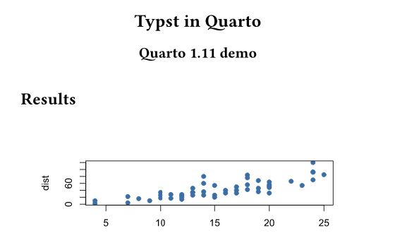
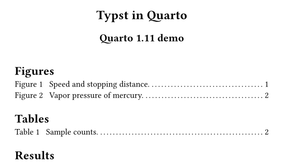
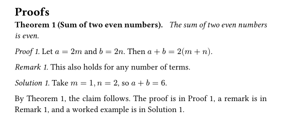

Quarto 1.11 Has Been Released: Comparing the New Typst Features Visually
On November 2, 2026, the official announcement post for Quarto 1.11 was published. This release came out early to deliver a security update for Deno, the runtime Quarto uses for things like HTTPS requests. It also includes improvements to accessibility, Typst, Julia, and shared metadata. The full list of changes is in the release notes.
This article focuses on the new features for Typst output, which produces PDFs, and renders the same document with 1.10 and 1.11 so you can compare the results. The other changes are summarized briefly at the end.
The Document Used for Comparison
I prepared a short test document with two figures, one table, and theorem and proof blocks. The source is in the GitHub repository. The YAML header is shown below. lof and lot are new in 1.11 and are explained later.
format:
typst:
papersize: a5
lof: true
lot: true
crossref:
lof-title: "Figures"
lot-title: "Tables"The images below are the result of running quarto render on the same file with Quarto 1.10.18 and 1.11.9 and compiling it with Typst.
Lists of Figures and Tables (lof and lot)
Quarto 1.11 can generate a list of figures and a list of tables in Typst output. Just add lof: true and lot: true to the YAML. The headings follow the document language. To change them, set lof-title and lot-title under crossref.
On the left is the top of page 1 from 1.10.18, and on the right is the same part from 1.11.9. In 1.11, a list of figures and a list of tables with page numbers is inserted below the title.


Proof, Remark, and Solution Blocks with Cross-References
According to the official announcement, Quarto 1.11 renders proof, remark, and solution blocks with the same machinery as theorems. As a result, labeled blocks can be cross-referenced. The ID prefixes are prf- for proofs, rem- for remarks, and sol- for solutions.
::: {#prf-sum .proof}
Let $a = 2m$ and $b = 2n$. Then $a + b = 2(m + n)$.
:::
The proof is in @prf-sum.The image below is the actual output from 1.11.9. Labeled blocks are numbered like “Proof 1.”, and @prf-sum in the text is replaced with “Proof 1”.

In this test, I did not see proof blocks and similar blocks gain a visible box. The visible changes are numbering and cross-references. An unlabeled .proof is still output as an unnumbered “Proof.”, and I saw no difference from 1.10.18. The 1.10.18 image comes from the same document before I added the labels, and I did not render labeled blocks with 1.10.18 for comparison. The description of 1.10 behavior is based on the official announcement.
Font Names in Typst
CSS generic font family names (serif, sans-serif, and monospace) are now resolved to available fonts. Previously these names were passed to Typst as they were, which caused warnings. This does not change the appearance, so I skip the image comparison.
The bundled Typst version is 0.15.1, the same as in 1.10.
Other Changes
Here is a brief summary of the main non-Typst changes described in the official post. See the post and the release notes for details.
- Security update: The bundled Deno is now 2.9.8, which rejects certificate chains containing the compromised eMudhra and emSign keys. It is not backported to 1.10, and 1.10.20 is the final patch release of that series. The updated Deno requires macOS 12 or later.
- Accessibility: Improvements include a “Skip to main content” link, keyboard operation, focus rings, and named navigation regions. Alt text (
fig-alt) for Mermaid and Graphviz diagrams is now preserved in HTML, Revealjs, Word, and Typst. - Julia:
execute-dirandkeep-ipynb: trueare supported, and hanging issues were fixed. - New definition list syntax: You can write a
.definition-listdiv containing nested bullet lists. The post says this is the syntax used by Quarto 2. - Metadata merging: How shared metadata (project-level and similar) is combined with same-named document keys was fixed. If you use keys such as
keywordsto override inherited values, check the result. - Stricter website metadata validation: Misspelled
open-graphandtwitter-cardoptions now fail the render instead of being ignored. For a site with many pages like this one, it is worth rendering everything once after updating. - Custom SCSS for themes: Focus ring variables are now
$focus-ring-outer-colorand similar. Bootstrap’s$focus-ring-colorand related variables are no longer used for this.
How to Update
The update procedure is in my Quarto 1.9 article. After updating, run quarto --version to confirm that you are on 1.11.
Sources and Rights
This article is my own summary based on the official announcement post and the release notes. I did not copy official text or images. The images shown here were produced by rendering my own test document with Quarto. Quarto is a registered trademark of Posit. This article is not an official Quarto page and is not affiliated with or endorsed by Posit.